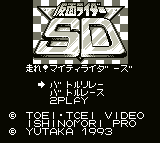

Kamen Rider - Gameboy Games

Controls
- A button: Accelerate
- B button: Attack
- Start: Pause
- Select: [not used]
You must guide Kamen Rider past unique obstacles and use his weapons to outrace his enemies. No other information
available at this time.
Anime Video Game Resource Center © 1998 by Luis A. Cruz